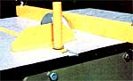
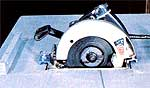
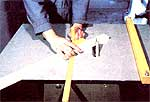
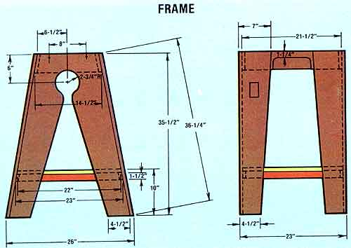
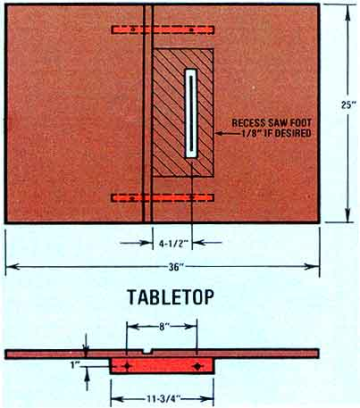
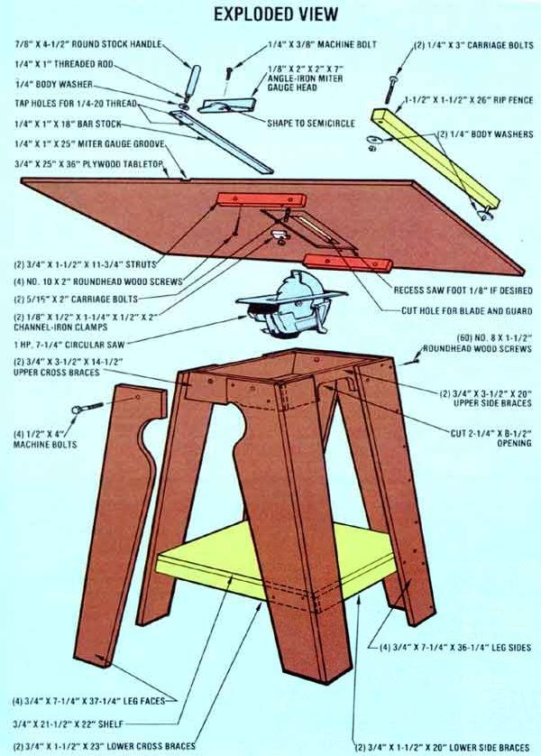

Build Mom's Topsy-Turvy Table Saw
Even if your cash flow's a mere trickle, your wood shop can get a ripping good start, including diagrams, instructions, gathering the goods, lay up the frame, wrap up the details.
March/April 1982
The ability to create something useful from little more than a pile of lumber is a talent that grows with practice. Unfortunately, it's hardly possible for the neophyte to build Project One if he or she lacks the proper tools . .. and yet, given the state of our economy, those implements might very well be unaffordable unless some money can be saved as the result of a few successfully executed do-it-yourself undertakings.
There is a way out of this dilemma, though. Thanks to a little bit of "make do" work on the part of researcher Clarence Goosen, we've been able to come up with a sound design for a piece of equipment that's essential to any well-equipped workshop: the table saw. And because the homemade apparatus uses a common hand-held circular saw (a relatively inexpensive tool used in tens of thousands of households across the nation) as the heart of its operation, the cost is a mere fraction of the $200 to $300 purchase price that's typical for an implement like this. Furthermore, the completed project can, in effect, serve as a dual-purpose tool, since the motor-and-blade assembly can be disconnected from the table frame in a matter of minutes and used separately . . . just as you'll likely use it to cut the table saw's frame to size in the first place!
GATHER THE GOODS
To work up your own topsy-turvy trimmer, you'll need to get hold of-in addition to a functioning adjustable circular saw with at least a 1-HP motor and a 7-1/4" blade-a 3/4" plywood sheet measuring 36" X 48", three pieces of 1 X 8, each 10 feet in length (as an alternative, you can cut up an entire 4' X 8' sheet of quality-grade 3/4" plywood to satisfy both requirements), 10 feet of 1 X 2, 6 feet of 1 X4, and a 26"length of 2 X 2.
The metal components required are a 4" piece of 1/8" X 1/2" X 1-1/4" X 1/2" channel iron, a 1/8" X 2" X 2" X 7" section of angle iron, a 1/4" X 1" X 18" length of bar stock, three 1/4" body washers, and a scrap of 7/8" round stock 4-1/2" long. All of the necessary hardware is detailed in our illustration, and you'll find the exact dimensions of the various finished components there, too.
"LAY UP" THE FRAME
After you've cut all the parts to the required sizes (a coping saw can be used to complete both the 2-3/4"-radius access hole and the 2-1/4" X 8 1/2" side opening indicated), you can begin to assemble the frame. Start by fastening the upper and lower side braces to the legs with No. 8 roundhead wood screws.
Before drilling the screw holes, though (try a 5/32" diameter for the shank and 5/64" for the threads), be sure the legs' edges extend beyond the supports by 1-1/2 inches, in order to allow the corners to be flush when the leg faces are installed. (This is necessary because the 3/4"-thick faces are attached to cross braces of equal depth, which are-in turn-butted against the ends of the side braces.) Also, make certain the legs and supports are flush at their upper edges, and that the lower braces are positioned according to the measurements given in our illustration.
Once the two side components are completed, go ahead and fit the upper and lower front and back cross braces in place. The angles at the ends of these boards will have to be trimmed to suit the profile of the leg sides, but if you stick to the dimensions shown, the finished uprights will be the correct distance apart and have the proper "splay".
Prior to installing the four leg faces, slip the 3/4"X 21-1/2" X 22" shelf into place on top of the lower supports (it doesn't have to be secured with screws). With that done, lay the face boards in position and drill through the edge of the leg sides and into the shoulder of the abutting planks. A series of screws can then be used to hold the corners together firmly.
The saw table's top can be constructed next. First, choose the best face of your 3/4" X 25" X 36" plywood sheet and lay that side down. Then mark the center of the long side of the platform and fasten your 314" X 1-1/2" X 11-3/4" struts to the tabletop with No. 10 X 2" wood screws . . . making sure that the boards are parallel to the 36" sides, 20 inches apart at their outer faces, and bisected by the sheet's centerline.
Next, draw another line 3 inches to one side of the first, and lay your saw on the table's surface so that its blade is centered and parallel with this score. Then mark a border around the blade and its guard. (The dimensions of the perimeter will, of course, vary . . . depending on the make of your saw, its blade diameter, and the design of the guard.) Once you've established the necessary limits, use the tool to cut the rectangular hole, and double-check its dimensions by adjusting the blade depth to the extreme and tilting the toothed disk to its 45° maximum, with the saw in place.
When this step is completed, drill two 5/16" holes, through the tabletop, near the front and back of the saw's metal foot (position them each an inch or so toward the blade's inside face) and recess the top part of the openings 1/8" with an 1 1/16" bit. Then slip your 5/16" X 2" carriage bolts through the bores from the top side, drill 5/16" holes into the center of each of the two pieces of channel iron, and secure those homemade clamps tightly against the platform with the foot in between. (For a more positive mount, you may also want to recess the saw's foot into the board's lower surface by 1/8" or so.) You can now use the upside-down saw as a table model .. . once you've worked up the rip fence and miter gauge.
To make the first of the two attachments, lay your 26" length of 2 X 2 across the width of the table, and drill a 1/4" hole through each end, at points just shy of the platform's edge. Then run the 1/4" carriage bolts through the openings, slip a body washer over each of the bolts, and secure them with 1/4" nuts. This somewhat crude fence can be used as a ripping guide if you simply slide it over the table platform and lock it in the desired position with the washer clamps.
Constructing the miter gauge might seem a bit more difficult because it involves tapping metal parts. However, it shouldn't prove to be too complicated if you begin by routing a 1/4"-deep by 1 "wide groove across the face of the table, with its near edge 4-1/2 inches from the saw blade. (If you don't have a router, your circular saw-set to the proper depth and run repeatedly across the to-be-cut channel until the 1 " breadth is achieved-will get the task done . . . and neatly, too, provided you take the time to clamp a straight board to the platform to serve as a guide for the saw foot's edge.)
Once you've made the groove, you can drill two 13/64" holes, 1-1/2 inches apart, in the end of the 1/4" X 1 " X 18" piece of bar stock . . . and tap them for 1/4" coarse threads. By boring the same size opening, to a depth of 1/2", in one end of the 7/8" round bar, tapping it, and screwing in a 1 " length of threaded rod, you can then use this miter gauge handle as a lock for the angle-iron swivel head . . . if you shape the base of the latter component to include a semicircle-as shown-then drill a 1/4" hole at the center of the arc and bolt the angle to the bar stock, through the innermost hole. (A body washer placed between the handle and the upper surface of the guide's base will hold the turnable angle section in any position when the grip is twisted into the remaining tapped opening in the sliding bar.)
Finally, to hold the cutting platform in place on top of its four-legged stand, merely drill a 1/2" hole through each leg face, the cross braces behind them, and the struts on the tabletop . . . and then slip 1/2" X 4" bolts into the bores to serve as pins.
To avoid the bother of having to reach under the table to turn the drive motor on and off, you can easily rig up an exterior control by cutting a hole in one of the leg sides, installing a switch enclosure over the opening, and fitting a 20-amp, motor-rated switch-and a cover plate-to the box. Two short lengths of electrical cable with a male cap and a female connector end, wired into the switch, will allow you to plug the saw and the power cord through the breaker for the sake of safety and convenience.
To spruce up this practical project a bit, feel free to give both the wooden and the metal parts a coat or two of paint. If you treat the machine with reasonable care, and-more important-always bear in mind that it can cut flesh as easily as it does wood, you'll probably be able to enjoy several years of safe workshop sawing . . . on a budget that's as down-to-earth as the tool it let you build.

Your scrap pile can provide many of the necessary materials.
|

A pair of channel-iron clamps hold the foot in its recess.
|

The blade guard remains functional for safe cutting.
|

|

|

|